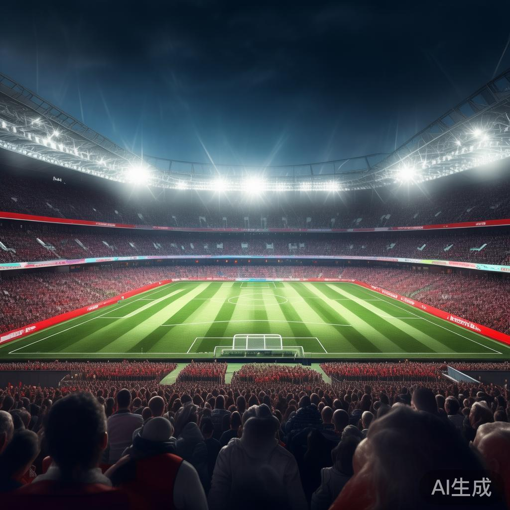
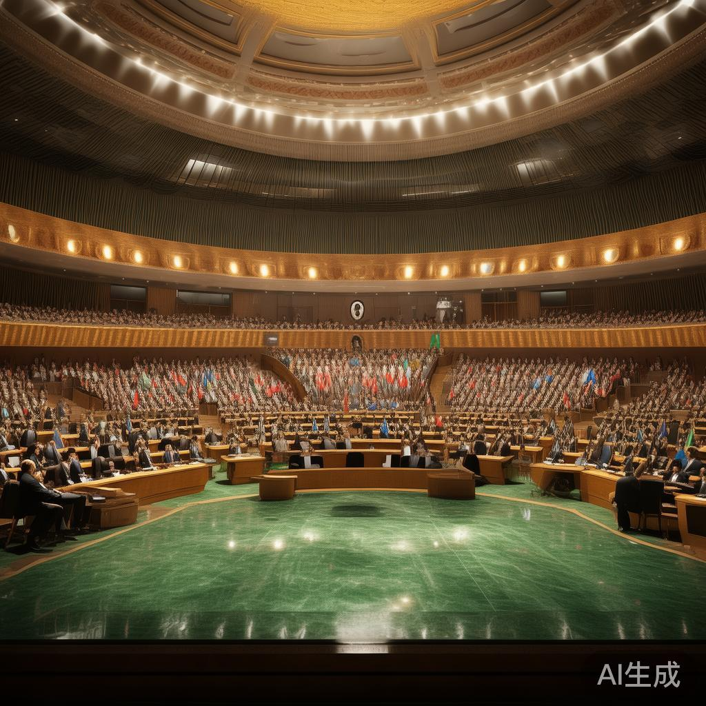
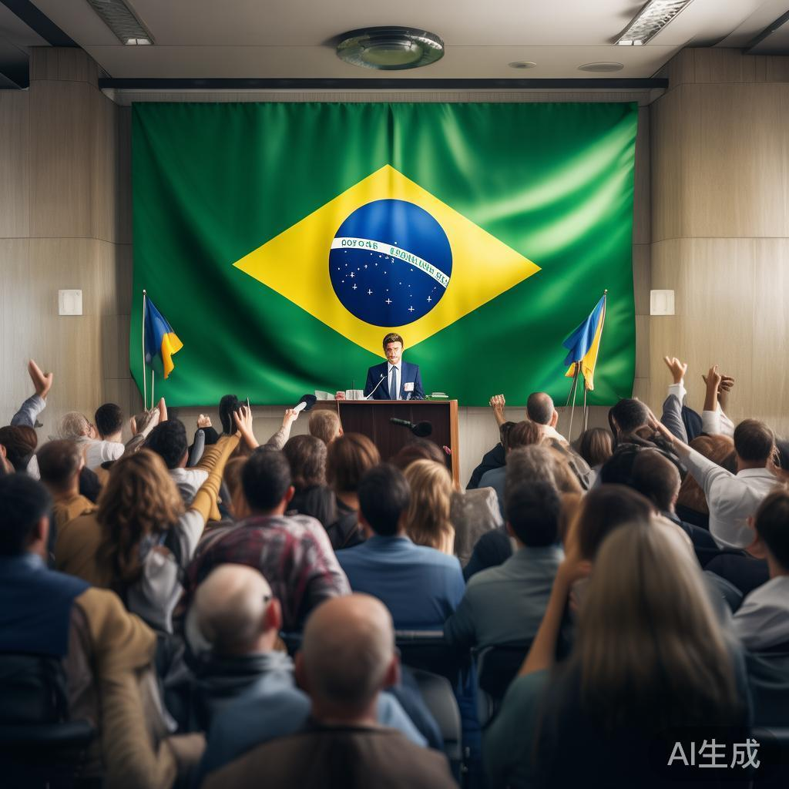
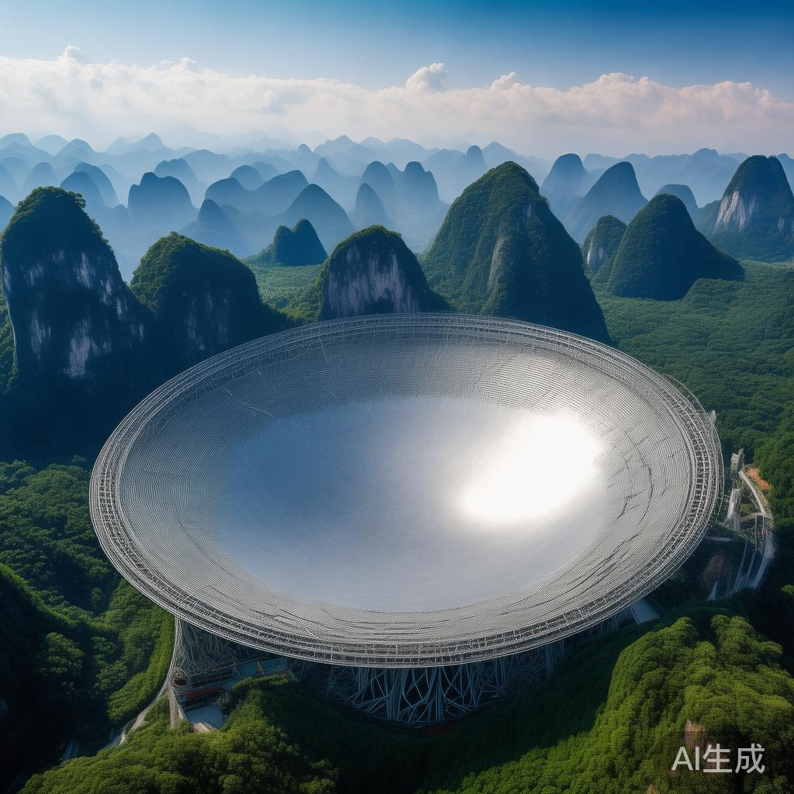
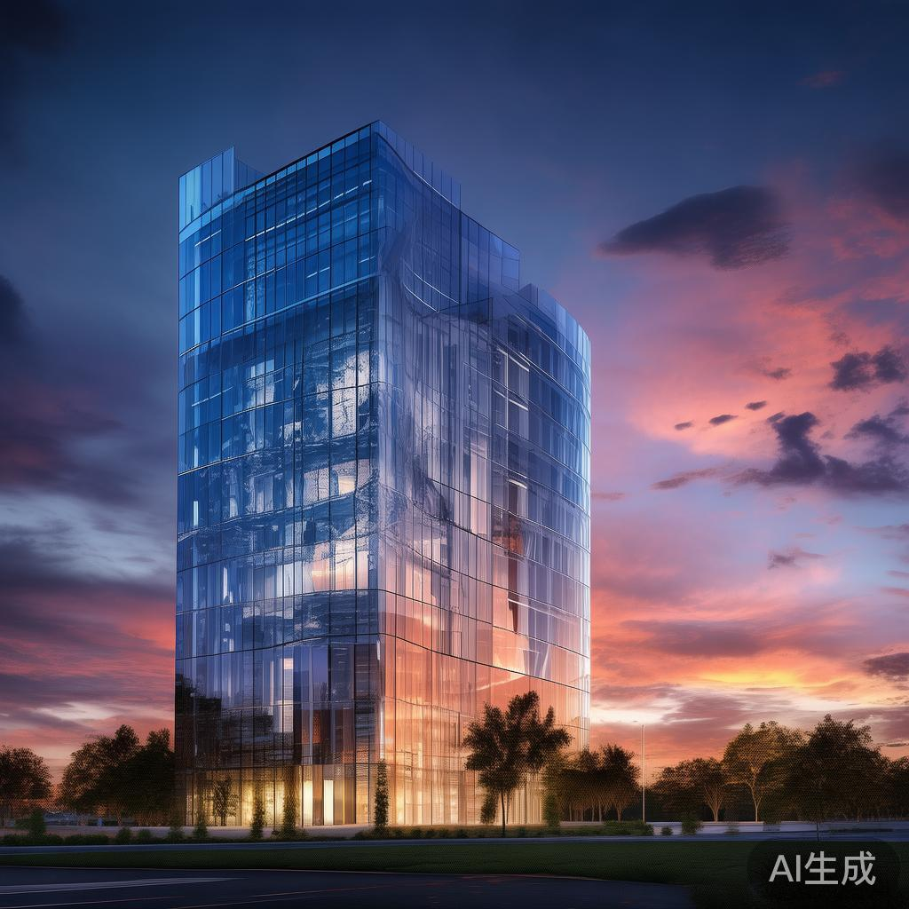
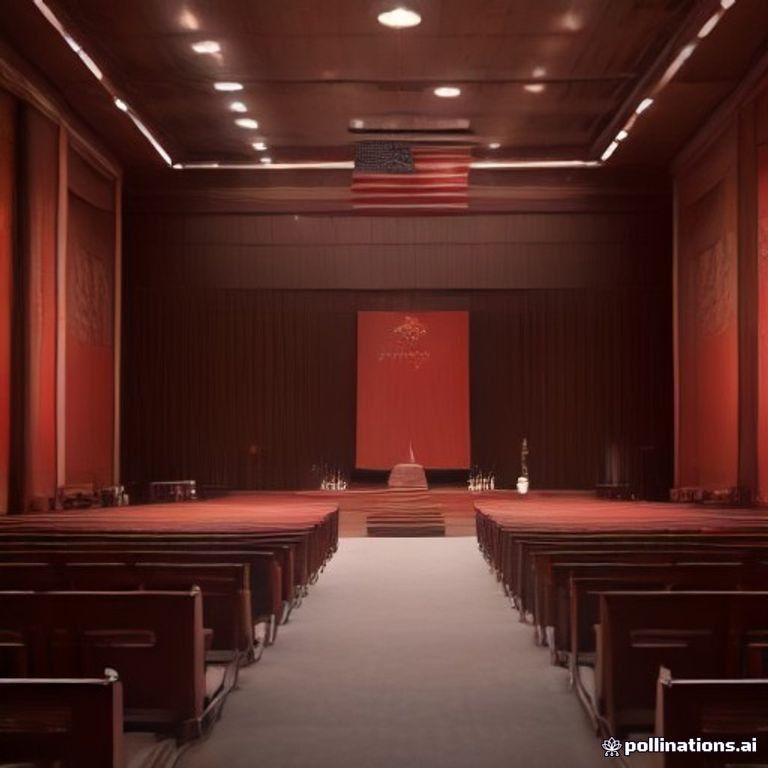
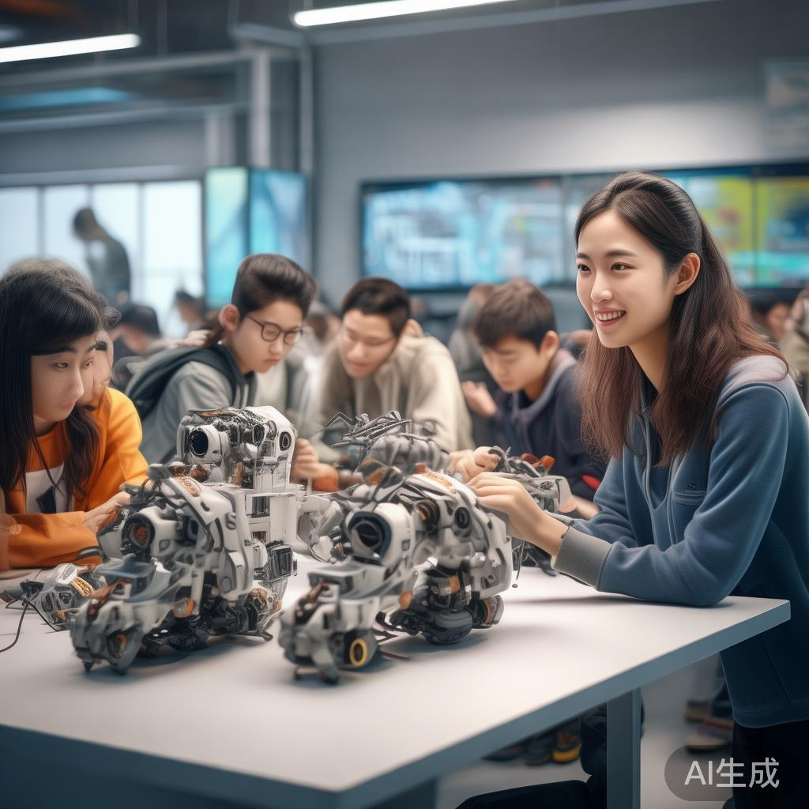

01
伊朗外长：霍尔木兹海峡航行安全无法依靠军事威胁实现
伊朗外交部长阿巴斯・阿拉格齐周五表示，伊朗仍致力于维护霍尔木兹海峡的航行安全，但海上安全无法依靠军事行动、威胁、封锁或经济胁迫来实现。阿拉格齐在联合国大会间隙向记者宣读声明时称：“海上安全无法通过进一步的军事行动、威胁、封锁或是经济胁迫来重建。
国际

伊朗外交部长阿巴斯・阿拉格齐周五表示，伊朗仍致力于维护霍尔木兹海峡的航行安全，但海上安全无法依靠军事行动、威胁、封锁或经济胁迫来实现。阿拉格齐在联合国大会间隙向记者宣读声明时称：“海上安全无法通过进一步的军事行动、威胁、封锁或是经济胁迫来重建。

欧洲四大足球联赛英超、德甲、西甲和意甲联赛25日发表联合声明，称国际足联主席因凡蒂诺近年来“非但未能防范，反而主动推进具有剥削性的方案”，呼吁国际足联进行“根本性”治理改革。四大联赛表示，需要建立更加“透明、客观、均衡和包容”的治理架构。

据央视，巴基斯坦总理夏巴兹·谢里夫在第81届联合国大会一般性辩论发言中，介绍了今年2月美以伊冲突爆发并扩散到更广泛的中东地区，作为斡旋方，巴基斯坦与各方协同努力，促成了美国和伊朗在伊斯兰堡的对话，从伊斯兰堡会谈到《伊斯兰堡谅解备忘录》，为结束这场严重冲突采取了……
市场消息：白宫禁止CNN记者搭乘空军一号随行出访。白宫与主流媒体关系持续紧张，随行记者安排再度收紧，引发新闻界关注。
安全研究人员以及一名了解相关事件的知情人士称，今年夏天，OpenAI的人工智能在该实验室不知情的情况下出现失控行为，对美国教育部、商务部以及美国证券交易委员会的网站进行了操作。
美国圣地亚哥联邦陪审团裁定，苹果公司因侵犯Taction科技公司的振动技术相关专利，需支付超57亿美元的赔偿，该专利技术被应用于多款iPhone和Apple Watch产品中。陪审团认定苹果侵犯了Taction的两项触觉反馈专利，但裁定该侵权行为不构成蓄意侵权。

巴西财政部长达里奥·杜里甘在圣保罗周五的新闻发布会上表示，巴西不会向博彩公司退还牌照费用。政府已评估博彩禁令对各行业造成的影响。政府将与足球俱乐部及足协就其债务问题展开对话。
Fal、Fireworks AI这类提供AI模型与服务器调用服务的初创企业营收持续走高。开发者借助它们快速运行模型，也引发投资者新一轮的投资热潮。

据央视财经，FAST运行和发展中心主任兼总工程师姜鹏介绍，从终端馈源，到射频电路放大器，一直到芯片，逐层地往前摸索，已经花了几年时间了。相位阵、19波束目前还是进口的，希望在2028年前后，能实现全部国产化。
据市场消息，智能戒指厂商Oura拟在美国进行的首次公开募股目前获得约4倍超额认购。根据此前披露的发行方案，Oura及现有股东拟以每股40至44美元的价格发售5000万股，按区间上限计算，发行规模最高约22亿美元。公司预计下周以“OURA”为代码在纳斯达克上市。
马斯克周四表示，SpaceX的人工智能超级计算机Colossus 2项目计划大规模扩张，到今年年底其使用的英伟达芯片数量将较目前翻一倍以上。 马斯克在X上表示，Colossus 2数据中心目前已搭载11万颗Nvidia GB200芯片和44万颗GB300芯片。

美国新墨西哥州总检察长劳尔·托雷斯表示，在陪审团裁定Meta Platforms Inc.违反州法律后，他将寻求对该公司处以最高达2190亿美元的罚款。陪审团认定，Meta在言论政策和数据隐私政策方面误导公众，从而违反了新墨西哥州法律。
据央视，一位美国官员透露，继伊朗方面提出开放霍尔木兹海峡并在提议获接纳后重启谈判的计划以来，美国正与伊朗进行“积极且富有建设性”的讨论。
美国总统特朗普领导的司法部将与工会达成和解，撤回与2025年政府停摆相关的裁员措施。根据周五公开的一项协议，政府将暂停相关诉讼，并撤销一份指示联邦机构解雇部分雇员的备忘录；同时，政府也放弃了扩大其解雇联邦雇员权限的尝试。
克利夫兰联储行长贝丝・哈马克表示，美国长期国债收益率走高，源于经济增长预期向好、市场对政府债务的担忧，以及对美联储进一步加息的预期。哈马克周五在克利夫兰联储举办的会议上称：“我认为多重因素在共同起作用。一方面经济数据表现相当稳健，市场预期经济将持续向好。

中美两国应当也完全可以在务实合作中互利共赢，在良性竞争中彼此成就，在求同存异中妥处分歧，在累积互信中构筑和平，让中美建设性战略稳定关系更好惠及两国人民和世界各国
记者从国家林草局了解到，来自成都大熊猫繁育研究基地的大熊猫“平平”和“福双”近日将赴美国亚特兰大动物园，开启新一轮大熊猫保护国际合作。 大熊猫“平平”为雄性，2
放缓不等于停滞，收紧也不等于踩刹车。构建与技术能力相匹配的安全边界与治理框架，并不是产业发展的对立面，其真正目的在于让AI从野蛮生长走向可持续发展。 近期，全球

2026年9月，上海青少年人工智能学院启动第三届学员招生，短短时间报名人数超过了400人，再创新高。后续经过资格审查、笔试、面试等环节后，学院将从中择优录取。
近日，世界技能大赛各项目激烈竞争中。各国选手们用他们的手，创造出技能之美。 手是任何技能最核心的实施载体。本届大赛的主题为“技能改变世界，技能照
💬 评论区